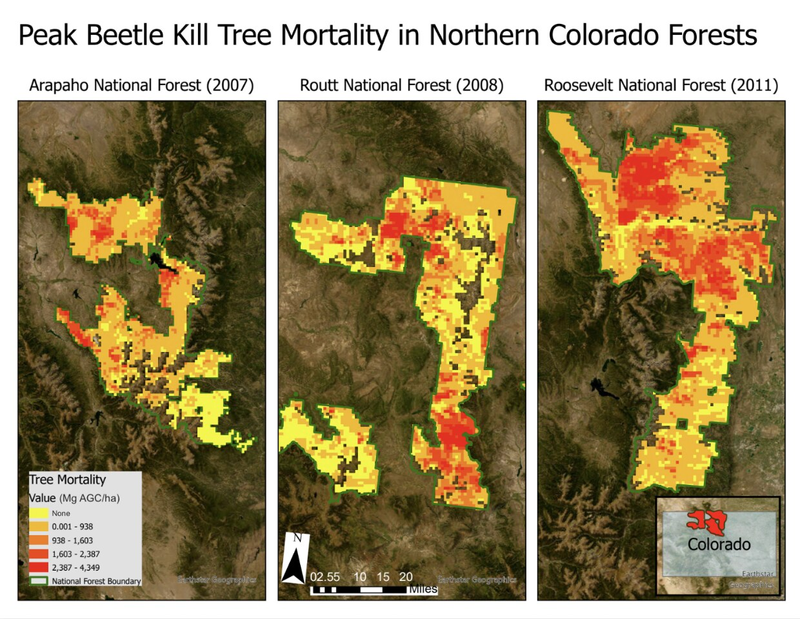

Peak tree mortality from bark beetles: Arapaho National Forest (2007), Routt National Forest (2008), and Roosevelt National Forest (2011).
A forest disturbance seen from space.
Bark beetles caused widespread forest mortality in northern Colorado during the 2000s. In this project, I used annual tree-mortality data from 2003–2012 to identify the peak year of beetle-caused mortality in the Arapaho, Routt, and Roosevelt National Forests.
I then compared Landsat 4/5 imagery from 1996 and 2011 to calculate NDVI change in Roosevelt National Forest, and tested whether slope and aspect were associated with peak mortality patterns.
Combining forest mortality data, terrain, and Landsat.
Clipped annual Oak Ridge National Laboratory tree-mortality rasters to each forest and standardized the color scale to compare severity across years and sites.
Derived slope and aspect from SRTM elevation data, converted mortality cells to points, and extracted terrain values for the peak-mortality year in each forest.
Calculated Landsat 4/5 NDVI for 1996 and 2011 in Roosevelt National Forest to visualize vegetation change before and after the outbreak.

Detecting change with Landsat.
The NDVI comparison showed fewer high-vegetation values in 2011 than in 1996, consistent with extensive forest mortality after the outbreak.
Using a second data source helped place the tree-mortality dataset in a broader landscape context and visualize the loss of green vegetation across the forest.